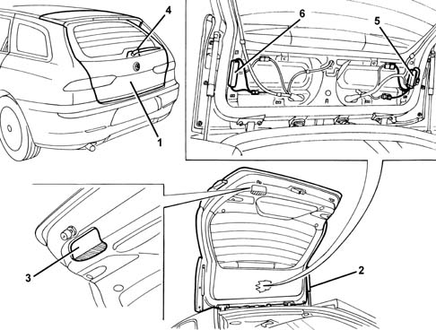

Introduction - TAILGATE/
- Path
- Descriptions > 70 FITTINGS > 7015 TAILGATE/ > Introduction - TAILGATE/
- Kind
- system description
- Applies to
- all engines; all production periods
- Interactive page
- https://sloeber94.github.io/elrnDB-a156/en/#/3239238
Applies to: all engines; all production periods; only with equipment: Station Wagon
Specifications:
The tailgate is made of double-galvanized high-tensile steel panels, and is internally lined with sound-proofing material which ensures high acoustic comfort.
The tailgate is held open by two gas-actuated rams, and on the bottom edge it has a special light which acts as both a clearance light (towards the rear of the car) and a light for the luggage compartment and surrounding area (downwards).
The tailgate has a rear window wash/wipe, and it contains an aerial amplifier and, depending on the version, a radio anti-interference filter.
COMPOSITION
Main components of the tailgate

1, Tailgate 2, Gas ram 3, Courtesy light 4, Rear window wiper 5, Aerial amplifier